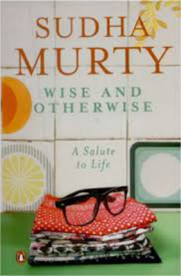

CATEGORIES |
|
BEST-SELLING |
| PRICE: 350 INR |
| DESCRIPTION:Elizabeth Gilbert tells |
| how she made the difficult choice to leave |
| behind all the trappings of modern American |
| success ie.marriage,house in the country,a |
| career and find what she truly wanted from |
| life. |
| PRICE: 275 INR |
| DESCRIPTION:This Simone de Beauvoir's |
| masterwork is a powerful analysis of the |
| Western notion of a woman,and a ground- |
| breaking exploration of inequality and |
| otherness.Beauvoir's pioneering and her |
| impressive text remains pertinent today |
| as it was sixty years ago and will also |
| provoke and inspire generations of men |
| and women to come. |
NON-FICTION |
|
| PRICE: 199 INR | |
| DESCRIPTION:Who Moved My Cheese? Dr. | |
| Spencer Johnson realizes the need for | |
| finding the language and tools to deal | |
| with change-an issue that makes all of | |
| us nervous and uncomfortable.Most people | |
| are fearful of change and Spencer Johnson | |
| shows us that what matters the most is the | |
| attitude we have about change | |
|  | |
| PRICE: 150 INR | |
| DESCRIPTION:Wish & Otherwise is | |
| a biographical book written by Indian | |
| author and social-worker Sudha Murthy. | |
| This book shows many encounters Sudha | |
| Murthy has had with people during her | |
| travels and lifetime. |